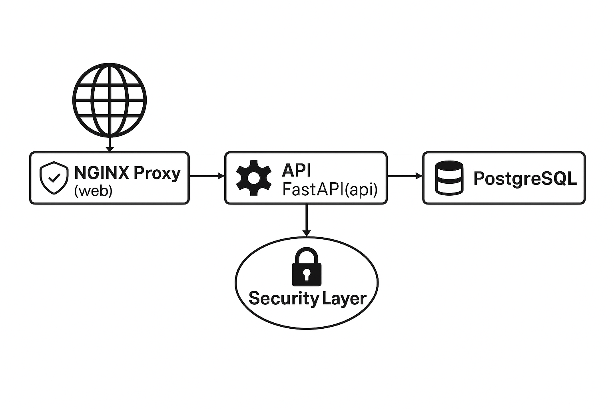

🛡️ Segurança e Arquitetura da Aplicação
Esta página apresenta um panorama da segurança implementada na API e da arquitetura dos serviços em Docker.
🔐 Mecanismos de Segurança
✅ Autenticação JWT
A autenticação é feita utilizando JSON Web Tokens (JWT). Após o login, o usuário recebe um token que deve ser enviado no cabeçalho Authorization para acessar rotas protegidas, como /consultar.
Authorization: Bearer <token_jwt>
🔒 Registro Protegido
A criação de novos usuários está protegida com uma chave administrativa (admin_secret), definida no .env. Isso evita o registro indiscriminado por qualquer pessoa na internet.
Exemplo de body no registro:
{
"nome": "Usuário",
"email": "usuario@email.com",
"senha": "123",
"admin_secret": "segredo-administrativo"
}
⚠️ Apenas usuários com o
admin_secretcorreto podem registrar e obter o token JWT.
⚙️ Variáveis de Ambiente
Todas as credenciais sensíveis estão armazenadas no .env e são passadas via docker-compose.yaml como variáveis de ambiente, mantendo o código seguro e configurável.
🧭 Mapa de Rotas
| Rota | Método | Protegida | Descrição |
|---|---|---|---|
/registrar |
POST | ⚠️ Parcial | Protegida por admin_secret |
/login |
POST | ❌ | Retorna token JWT |
/consultar |
GET | ✅ | Requer token no header |
🌐 Fluxo de Arquitetura
A aplicação é executada com Docker Compose e composta por três serviços: NGINX (proxy reverso), API (FastAPI) e PostgreSQL (banco de dados).
O fluxo pode ser representado da seguinte forma:

🔗 Conexões
- NGINX recebe as requisições na porta 8000 e redireciona para o serviço da API.
- A API gerencia autenticação, scraping e acesso ao banco.
- O banco PostgreSQL armazena os dados dos usuários.
- Tudo roda isolado em containers e comunica-se por uma rede Docker interna.